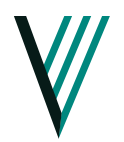

VERATAVENTURES
Parallel by design.
Three equal-angle trajectories branch cleanly from one accountable stroke. Every band is an outlined vector shape, with optical spacing and a stronger incoming stroke.

VERATAVENTURES
VERATAVENTURES
22.8° from vertical
160% of outgoing
One horizontal cap
Shared two-color miter
Ready for identity review at display and minimum sizes.